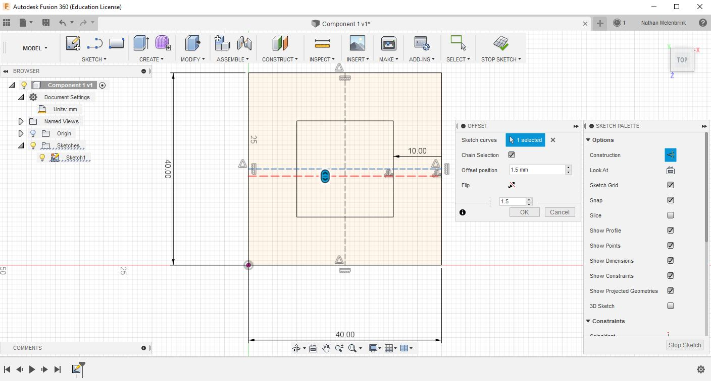

Laser Cutting and the Vinyl Cutter.
Sketching in 2D
xxxxxPress-fit kit.
Press-Fit Assembly Kit
For our first exercise in Fusion 360, we'll be designing and laser cutting a press-fit assembly kit -- a collection of one or more types of components which can be reconfigured to form different shapes. Some examples include stacking resistor boxes, cellular outlines, and a truncated icosahedron.
Sketching in Fusion 360
Open Fusion. Start by making a new folder called something like "Press-fit". In your modeling window, click the "Sketch" tab and select the XY plane such that your sketch is visible from the Top view. Expand the Document Settings menu and make sure you're working in mm units. Go ahead and save the file to your new folder as "Component 1".
Find "Rectangle" in the Sketch tab, and draw an outline for your component. 40mm by 40mm is a good size to start (you can change it later by double-clicking on the sketch dimension). Now we need to make notches in the component. Press "O" to offset the rectangle boundary to the inside of the shape. Try offsetting by -10mm. This will give us a uniform notch depth.

Now let's mark the midpoint of each edge to show where to place the notch. In the Sketch Palette, click "Construction" to make construction lines. Type "L" and draw horizontal and vertical mid-lines. Next we'll want to unselect "Construction" and Offset the horizontal midline by half the thickness of the material (if you haven't already, measure the thickness of the material with a caliper).
Next, under the Sketch tab, select the "Mirror" command, and mirror the offset line around the original midline. Offset and mirror the vertical line as well. This is all of the construction geometry we need for the sketch. Try clicknig dimensions and editing them.

Filets and Chamfers
This is just one of many ways to complete this assignment. You are strongly encouraged to look throguh forums and other tutorials to learn new tehcniques and methods.